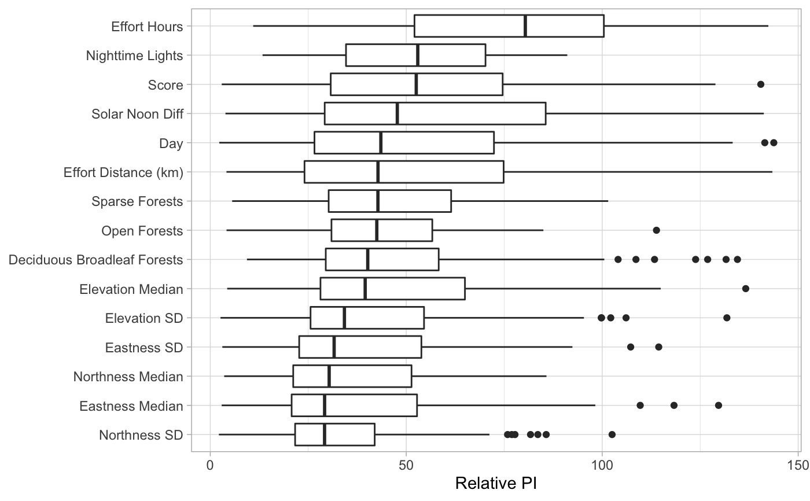

R/ebirdst-loading.R
load_pis.RdLoads the predictor importance data (from pi.txt), joins with stixel summary data, and cleans up the data.frame.
load_pis(path, return_sf = FALSE)
| path | character; full path to the directory containing single species eBird Status and Trends products. |
|---|---|
| return_sf | logical; whether to return an sf object of spatial points rather then the default data frame. |
data.frame containing predictor importance values for each stixel, as well as stixel summary information.
#># load predictor importance pis <- load_pis(sp_path) # plot the top 15 predictor importances # define a spatiotemporal extent to plot data from bb_vec <- c(xmin = -86.6, xmax = -82.2, ymin = 41.5, ymax = 43.5) e <- ebirdst_extent(bb_vec, t = c("05-01", "05-31")) plot_pis(pis, ext = e, n_top_pred = 15, by_cover_class = TRUE)